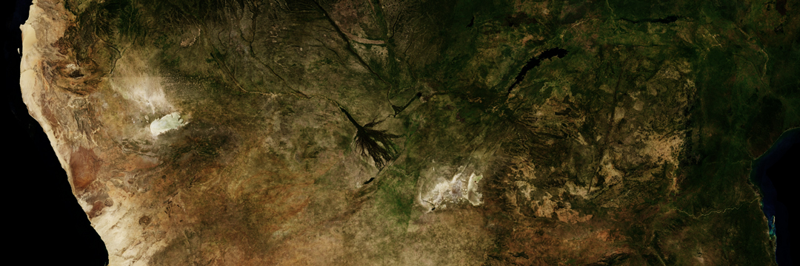
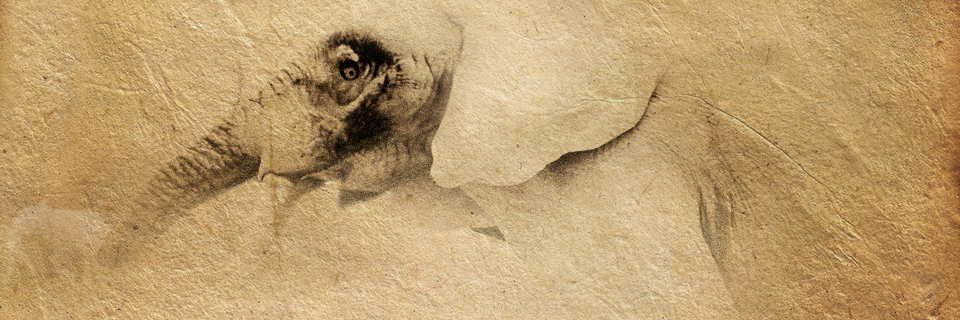
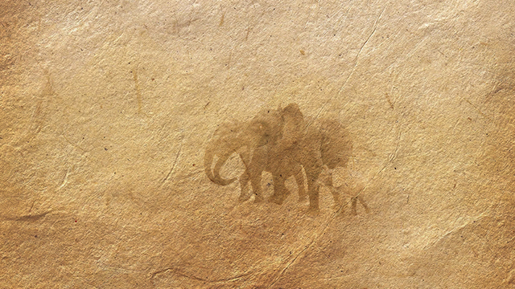
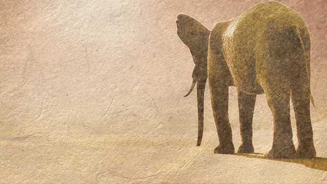

Each year, Southern Africa's Kalahari Desert hosts the largest collective land migration on Earth as the Okavango River becomes a vast, inland delta. The afresh flooded swamps welcome an array of intercontinental species to Botswana, none traveling farther than the elephant. Their journey is of epic proportions; for hundreds of miles, spanning several weeks at the peak of dry season, elephants in Africa are on an urgent quest for water. The heat can be insatiable. The dust swirling across the desert floor can shield stragglers from the herd. More than ever the young and the fatigued are in severe risk of dehydration and of being separated from the matriarch elephants who have journeyed across the great plains in dry seasons before.

© Descartes Labs, Landsat 8 Map. Okavango Delta, Botswana.
The Beginning.
This all began in the lead up to an international baccalaureate (IB) fine art show in 2007 with a series of wildlife studies. In 2010, a study of elephants reappeared in an animated short — a student animation at Carleton University that was originally titled “White Elephants” and was produced from concept to composite in the span of the single university term. In short: it was a rough animation, however, I had managed my way through the many technical challenges of the animation pipeline for games and cinematics. In so doing, I had gained an appreciation for the freedom of computer animation to design and tell stories.

Art of White Elephant (2010) © Dane Aleksander
The independent project stirred in the background of professional technical animation and design for augmented reality (AR) applications for a few years thereafter. At night the script was reviewed, rewritten and redesigned to explore a new found interactive capacity of storytelling in AR in the mid 2010s and in a way that may serve the experience of a story about conservation. The decision: to give the viewer the empowerment that is inherent in AR, was in part designed to impart a sense of responsibility to the viewer unto the story and – more specifically – unto the subject of the story — the elephant. This first required that the animation be limited to a collection of shots with different lengths and different aspects, which may then be developed within the framework of an interactive application, or app. An app also has the added advantage of accessibility in a marketplace with a revenue stream for wildlife. All revenue from the app is to be directed into wildlife conservation parks and projects on the ground in Africa.
The goal of this work in progress in its various artistic media has always been to present a unique interaction with a moment in the life of an African elephant, which may then extend to its audience a sense of responsibility for the fate of the animal in the wild. Elephants have existed for tens of millions of years. (Humans have existed for two million years.) This art project is about a truly magnificent animal that really exists in the world today, and may not for much longer. This is not Pokemon — this is a picture of the fishing pond before it was drained and replaced by the arcade that Satoshi Tajiri then visited in its stead; this is an image of the country-side before the city blossomed — the inspiration for a world of creatures as a consolation prize for the landscape where Tajiri had earlier prowled for insects. This is art to promote appreciation for – and awareness of – wildlife that has no voice to protect its wilderness. And this is art to thank you for joining the journey here at the beginning.


Art of White Elephant (2010) © Dane Aleksander